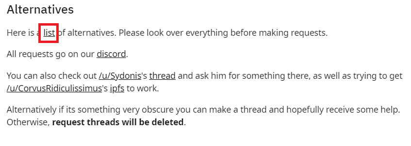

2) Находим вкладку с альтернативами.
Если не работает - используйте эту ссылку: тык, и переходи к шагу 4.
.
Этот мини-гайд написан в условиях лежащего TheTrove. Впрочем, если он поднялся - этот способ никуда не исчезнет, можете продолжать пользоваться им.
1) Идем на реддит TheTrove: https://www.reddit.com/r/TheTrove/
2) Находим вкладку с альтернативами.
Если не работает - используйте эту ссылку: тык, и переходи к шагу 4.
.
3) Находим лист альтернатив.
4) Тут есть два места, в которых можно искать. Они указаны ссылками. <dot> нужно заменить на точку, чтобы ссылка заработала.
5) После перехода по ссылке, вы увидите четыре pdf-файла.
Ищите то, что вам нужно, при помощи поиска текста по странице (Ctrl+F).
6) Если вы нашли то, что вам нужно, скорее всего ссылка будет необычного вида. Допустим, мы хотим покопаться в архиве по старому миру тьмы:
Нам нужно перевести ссылки из зашифрованного формата в обычный. У ссылки две части - левая и правая, разделенная пробелом.
Первая - это ресурс, на котором лежит архив. В данном случае, это m3g4. Чтобы понять, что это за ресурс - сверяемся с этой табличкой и пытаемся угадать:
m3g4 похоже на mega(самый первый ресурс), следовательно - это наш сайт. Первая часть ссылки - mega.nz
Далее мы просто прибавляем вторую часть ссылки -
mega.nz/#F!YXJAiIbI!1calHKSGm4OOZioAaHlaYw!4fJiwJ6Y - итоговая ссылка, которая приведет нас в архив.
7) Мы оказываемся в архиве, в файлообменнике. Отсюда, ищем то, что нам нужно руками. Если не работает - смотри за картинкой.
Для большинства файлообменников необходим VPN. Советую вот этот: ссылка, тыкни сюда + Google Chrome.
Бесплатно дают 3 гигабайта в месяц, больше не нужно. Необходима установка расширения в браузер.